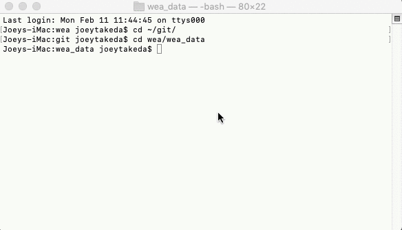
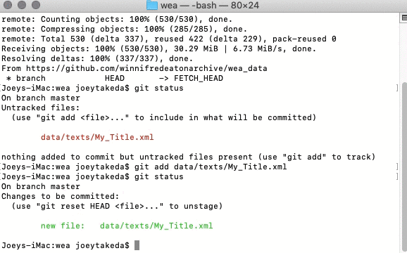
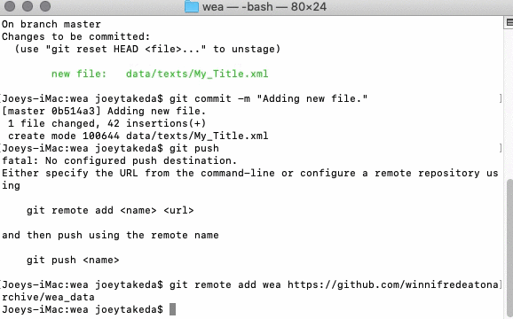

The following are the Guidelines and schema specification for the Winnifred Eaton Archive project (WEA). The project uses a highly constrained version of the TEI Guidelines; the texts are lightly encoded with very little linked data. Primarily, the texts are meant to be easily ported into an existing Omeka framework; the details of this framework are still in development.
2 Requirements
To edit material for the site, you will need to use a computer with the following software:
Git (to get data from and commit data to the repository). Most computers come with git automatically installed. To check this, open the Command Line (Windows) / Terminal (Mac/Linux) and type in git --version. If you get something like this in response: git version 2.17.2 (Apple Git-113), then you have Git installed. Otherwise, follow the instructions here.
oXygen XML Editor. (For current RAs, talk to Mary Chapman about licensing.)
You must also set up a free Github account here. It will be connected to your email address; once the Github account is set up, let the repository owner (currently Joey Takeda) know the email address used so that they can grant you write access to the repository.
3 Using Github
All of the data for the project is kept in a Git repository that is hosted through Github. Git is a version control system, which means that one could "roll back" the site to any particular version, and retrieve any file at any state of editing. Note that Github is a public repository, so all of the data and commit messages you make are visible to anyone. Our Github repository URL is https://github.com/winnifredeatonarchive/wea_data.
3.1 Setting up the repository
To get the data, you must first checkout a copy of the repository as follows:
Open the terminal
Create a directory for working in: mkdir wea
Go into the directory: cd wea
Initialize the repository: git init .
Pull the repository: git pull https://github.com/winnifredeatonarchive/wea_data
Note that you only need to do this the first time you start working in the Github repository.
3.2 The Github Workflow
The normal workflow for working in Github (and any version software) is as follows:
Update your repository so that any changes made by others are pushed into your local system
Commit the items to the repository
Push those items to the Github interface
3.2.1 Updating
Make sure to update as often as possible; always update at the beginning of your working session.
Go into your working folder: cd wea
Pull the repository: git pull

3.2.2 Committing
Unlike some versioning systems, Github requires three steps for committing/saving your work to the repository.
First, check the status of your files to see what you have changed since your last commit: git status If there are no changes to the repository, then you'll like see something like this: On branch master nothing to commit, working tree clean If there are changes, you should see something like this: On branch master Changes not staged for commit: (use "git add <file>..." to update what will be committed) (use "git checkout -- <file>..." to discard changes in working directory) modified: README.md no changes added to commit (use "git add" and/or "git commit -a")
If there are changes, then add the files/folders that you want to commit to the repository. git add data/texts/My_Title.xml
Third, commit the files to the repository, including a commit message that explains what you did: git commit -m "Adding new file."

Fourth, push the files to the repository: git push Note that, if you are committing for the first time, you'll like see something like this: Either specify the URL from the command-line or configure a remote repository using git remote add <name> <url> and then push using the remote name git push <name> This means that you must set up your local copy to track the changes in the global repository. To do that, simply follow the above instructions like so: git remote add wea https://github.com/winnifredeatonarchive/wea_datagit push wea You'll then like get another message, saying something like: fatal: The current branch master has no upstream branch. To push the current branch and set the remote as upstream, use git push --set-upstream wea master To resolve that, simply: git push --set-upstream wea master  You may then be prompted for your username and password; if this is your first commit, then it might give your instructions on how to store those credentials in your local git system so that you do not need to add your username and password every time you commit.
3.3 Github Summary
The basic steps for working with Github are:
Open a the Terminal or Command Line (on Mac, use the ⌘ + spacebar and type "Terminal" to find it)
Go into your working directory (likely called "wea"): cd wea
Before you start working:
Pull the changes from the repository so that your repository is up-to-date: git pull
While you're working:
Save your file (using command/ctrl + S like in MS Word)
Validate by pressing the red checkmark button in the toolbar in oXygen
Once your file is valid and you want to save the file to the repository:
Stage your file to be committed: git add .
Commit your changes: git commit -m
Push your changes to the repository: git push
4 Creating a New Text in oXygen
To create a new text file, use the built in text template
First, in the project view in oXygen, right click the data/texts folder and click "Add new file"
Select "wea_template.xml" and give your file a name. The name should be two or three words, separated with underscores.
Input the (modernized) title of the document
Select the transciber
Select the copy editor
Select the encoder (who is usually you)
Select the genre
Select the location (usually derived from the Google Drive folder structure)
Your new document should be created!
Remember to commit the changes to the repository using the above instructions.
5 Encoding a Primary Source Document
Below are abbreviated discussions on how to encode various features of a text
5.1 Structure
All content of the texts goes into the body element. Surround all content with a div element like so:
Most of the texts have some sort of header or closer with the author's name, date of publication, et cetera. Use the opener element if this occurs at the beginning of the text and the closer element if it is at the bottom.
5.3 Bylines
If there is an authorial statement of responsibility of some sort, enclose this in a byline element. Tag Winnifred Eaton's name (in whatever psuedonymic form it appears) with the name tag with an ref value of pers:WE.
5.4 Gaps and omissions
If the text cannot be transcribed for some reason (damage, etc), then use the gap element to signify that there is a gap in transcription:
<gap reason="damaged"/>
If you can supply the damaged text, use the supplied element instead with an resp value pointing to your xml:id (which is usually your initials):
<supplied resp="pers:JT">ed</supplied>
You can encode how certain you are of your editorial addition by using the cert attribute on supplied with a value of "low" "medium" or "high". If no cert is supplied, it is assumed that it has a high value of certainty:
<supplied resp="pers:JT" cert="low">ed</supplied>
5.5 Code Templates (Shortcuts)
The table below lists keyboard shortcuts for inserting common encoding features in a text. In most cases, the code template simply requires selecting (i.e. highlighting) the bit of text you want to encode and then typing in the keystroke; the exception currently is the gap element shortcut, which is simply inserted where your cursor is in the document.
M1
Command key on MacOS X, Ctrl on other platforms.
M2
Shift
M3
Option on Mac OS X, Alt on other platforms
Name
Description
Result
Keystroke
Insert left quotation mark
Insert the the opening curly quotation mark
“
M1 M2 L
Insert left single quote
Inserts the opening single curly apostrophe
‘
M1 M2 A
Insert right curly quote
Inserts the closing curly quotation mark
”
M1 M2 R
Insert right single curly quote
The closing single curly apostrophe
’
M1 M2 Z
Tag foreign
Tag a foreign selection
<foreign>${selection}</foreign>
M1 M2 F
Tag gap
Insert a gap element
<gap reason="${caret}"/>
M1 M2 G
Tag paragraph
Tag a paragraph
<p>${selection}</p>
M1 M2 P
Tag Winnifred Eaton's name
Tag a reference to Winnifred Eaton
<name ref="pers:WE">${selection}</name>
M1 M2 W
6 Building the Schema
All constraints and documentation are contained within the ODD file, including the RelaxNG schema, the schematron file, and the compiled schematron XSLT.
To regenerate the schema and the documentation follow these directions
In oXygen: Simply open the ODD file in the oXygen project file and press the red "play" button.
Command line: in the root project directory (wea_data), run: ant -lib lib -f code/buildSchemas.xml Note that you must have ant installed.
Appendix A
Schema wea: Elements
<abstract>
<abstract> contains a summary or formal abstract prefixed to an existing source document by the encoder. [2.4.4. Abstracts]
This element is intended only for cases where no abstract is available in the original source. Any abstract already present in the source document should be encoded as a div within the front, as it should for a born-digital document.
Example
<profileDesc> <abstract resp="#LB"> <p>Good database design involves the acquisition and deployment of skills which have a wider relevance to the educational process. From a set of more or less instinctive rules of thumb a formal discipline or "methodology" of database design has evolved. Applying that methodology can be of great benefit to a very wide range of academic subjects: it requires fundamental skills of abstraction and generalisation and it provides a simple mechanism whereby complex ideas and information structures can be represented and manipulated, even without the use of a computer. </p> </abstract> </profileDesc>